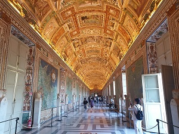

A Itália tem vários lugares que deves visitar. Abaixo apresento alguns dos locais mais conhecidos que deves incluir no teu roteiro.

Assista a este vídeo para conhecer mais paisagens italianas:
| Cidade | Atração / Lugar | Descrição |
|---|---|---|
| Roma | Coliseu | O famoso e gigante anfiteatro do antigo Império Romano. |
| Roma | Fontana di Trevi | A fonte, onde as pessoas atiram moedas. |
| Vaticano / Roma | Museus do Vaticano e Capela Sistina | Museu de arte histórica com as famosas pinturas de Miguel Ângelo. |
| Roma | Panteão | Antigo templo romano com uma enorme cúpula. |
| Torre de Pisa |
A célebre torre sineira inclinada localizada na Praça dos Milagres. |
|
| Veneza | Grande Canal e Praça de São Marcos | Os românticos canais de água e a praça principal da cidade. |